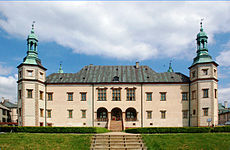
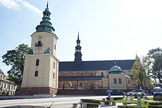
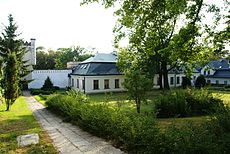
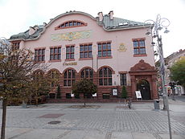
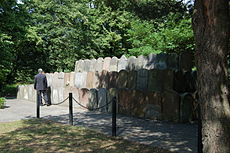
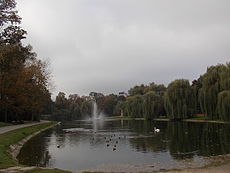

Zabytki Kielc
Pałac Biskupów Krakowskich

Bazylika katedralna Wniebowzięcia NMP

Pałac Tomasza Zielińskiego

Gmach Towarzystwa Wzajemnego Kredytu – obecnie BGŻ

Lapidarium z macew na Cmentarzu żydowskim

Park Miejski w Kielcach

🡐🡐 Wróć